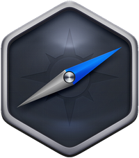

Nw.js
is currently the recommended way to make desktop apps with SmallJS.
It API is fully encapsulated in SmallJS.
Compared to Electron, NW.js is more memory efficient and less complex to develop in.
Compared to NodeGui, it is more compatible with browser development.
In this tutorial section, we'll be examining the Example NW.js app.

Lets start by opening the NodeGui example project.